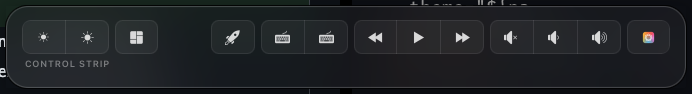
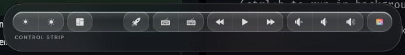
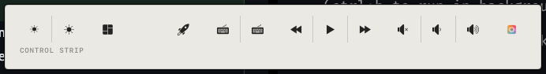
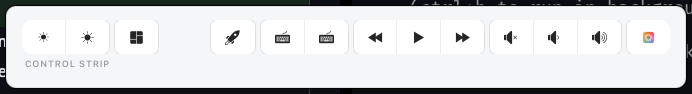
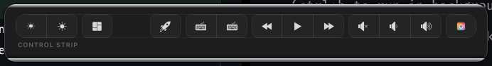
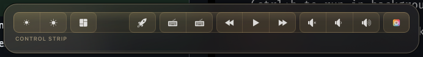
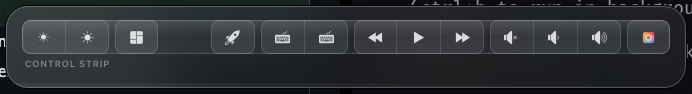
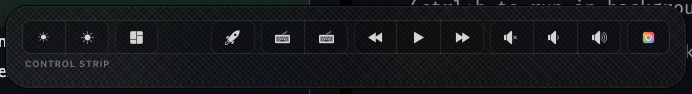

GhostBar shows your Touch Bar's live touch position, real Control Strip layout, and action feedback right on your screen — so you never have to glance down to know what's under your finger.
Every claim GhostBar makes about your Touch Bar is read from macOS itself — never inferred from a static reference chart.
Tracked via the same low-level digitizer API trackpad-visualizer tools use, rendered as a glowing dot on real macOS frosted glass.
Reads your actual customized layout and current mode — Function Keys or Control Strip — straight from macOS's own preferences.
Brightness, volume, mute, media, keyboard illumination — shown as a clear label the moment you press it.
From restrained glass to Braun-flat to brushed-metal, plus three material finishes: Gold, Silver, Carbon Fiber.
Pin the panel open on demand, fully rebindable — no need to touch the physical bar to check your layout.
No Dock icon, single-instance guarded, auto-checks for updates, installs and upgrades cleanly via Homebrew.
Pick one in Preferences — applies live, no relaunch needed.








My MacBook's Touch Bar OLED panel is dead — but the digitizer underneath it isn't. The display and the touch sensor are separate hardware paths that failed independently, so every tap still registers, I just can't see it happen.
I built GhostBar to get that feedback back onto my screen — and realized the same overlay is worth having even with a working display, since either way you're looking away from your screen to see what's on the bar.
Ad-hoc signed, not Developer-ID notarized — the cask clears the Gatekeeper quarantine flag for you, so there's no manual right-click → Open step.